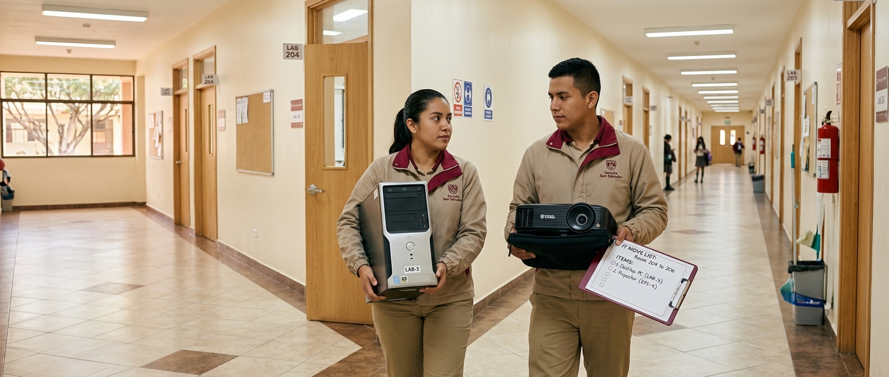

Qué registra
- Equipo trasladado y número de inventario
- Ubicación de origen y de destino
- Motivo del traslado
- Responsable y fecha
Cómo funciona
- El Coordinador registra el traslado al moverse el equipo
- La ficha del equipo actualiza su ubicación automáticamente
- Queda un historial completo de movimientos por equipo
- Administración puede auditar cualquier traslado
¿Quién puede hacer qué?
PProfesor: consulta el historial de traslados de su espacio
CCoordinador: registra y confirma traslados
AAdministración: audita y corrige si es necesario